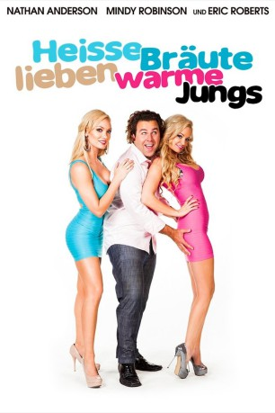

gesehen am 26.10.2015
gesehen am 26.10.2015Alternativ: Chicks Dig Gay Guys gesehen am 26.10.2015
 
 IMDB-Wertung: 3.7 / 10
IMDB-Wertung: 3.7 / 10  Metascore:
Metascore: 
Um Frauen aufzureißen, haben Scooter (Nathan Anderson) und Brad (Brian Patrick Murphy) bisher keine Taktik ausgelassen und inzwischen ein unerschöpfliches Reservoir von Anmachsprüchen entwickelt. Doch nun geht auch ihnen langsam die Luft für neue kreative Ideen aus und erprobte Methoden erweisen sich in immer kürzeren Abständen als erfolglos. Wenn überhaupt, fallen eher die Falschen auf ihre Masche rein. Scooter kommt nach einem Erweckungserlebnis schließlich der rettende Einfall: Hängen heiße Bräute nicht bevorzugt mit Schwulen ab? Und wäre es dann nicht der perfekte Weg, sich als homosexuell auszugeben, um die Bekanntschaft mit scharfen Mädels zu machen? Sein Kumpel Brad ist von der Idee zunächst zwar nicht allzu überzeugt, muss aber bald feststellen, dass die Masche tatsächlich zu funktionieren scheint.
Jahr: 2014
Dauer: 83 Minuten
FSK: 16
Land: USA Studio: Relativity MediaTonspuren: DTS - ,
Untertitel: Deutsch,
Auflösung: 1080p (1920x1080) Größe: 4577 MB
Genre: Komödie
Regisseur: Nathan Apffel
Drehbuch: Nathan Anderson, Nathan Anderson, Nathan Apffel
Soundtrack: Carl Johnson
Darsteller:
 Eric Roberts als Mr. Wagner
Eric Roberts als Mr. Wagner Greg Travis als Rich
Greg Travis als Rich Chasty Ballesteros als Gothic girl
Chasty Ballesteros als Gothic girl Heidi Lewandowski als Drunk Cute Girl
Heidi Lewandowski als Drunk Cute GirlDatei: X:\2014(G-M)\Heiße Bräute lieben warme Jungs (2014, FSK, 1920x1080).mkv seit 01.07.2015
Festplatte: HD 2013(I-Z)-2014(A-Z)
 Es gibt insgesamt 136 Filme in der Gruppe '2014(G-M)'
Es gibt insgesamt 136 Filme in der Gruppe '2014(G-M)'